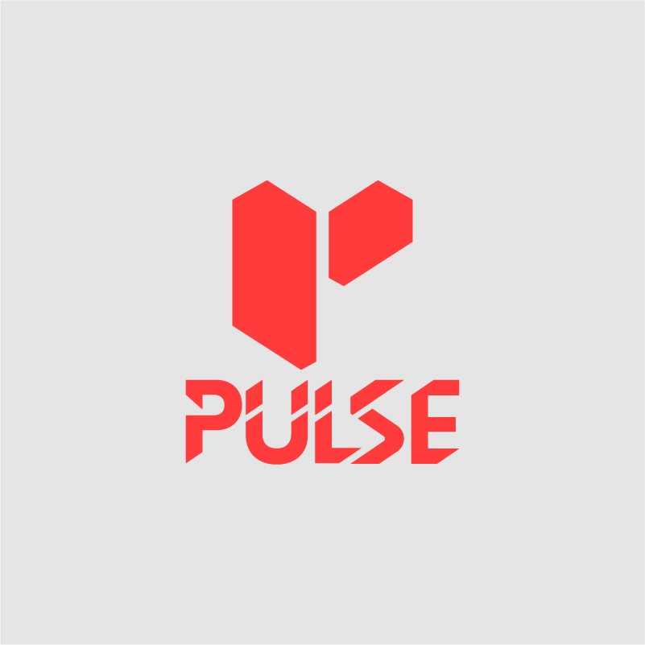
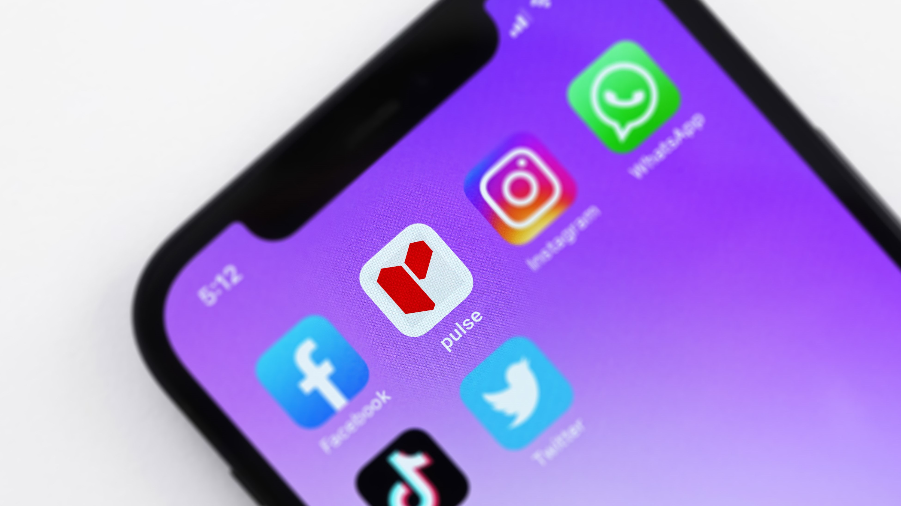

PULSE
Bold Identity for a Fitness & Health App
Details
- Project
- Pulse (Concept)
- Industry
- Fitness / HealthTech
- Year
- 2024
Scope
- Services
-
- App Identity
- Visual System
- Iconography
The Brief
Pulse is a conceptual fitness application designed to help users track heart rate, monitor activity levels, and stay engaged with their workout routines. The objective was to create a high-energy identity that communicates vitality and precision.
Concept & Thinking
The mark is built around two geometric forms that together construct an abstract "P" while simultaneously referencing a split, upward motion suggestive of a heartbeat spike or a body in motion.
- Geometric "P": A dual-form mark abstracting the letter into a symbol of motion.
- Dynamic Asymmetry: Reflecting the rhythm between effort and recovery.
- Precision Cuts: Angular letterforms echoing speed and data precision.
- Scalable Icon: Built to function as an app icon or a large-scale billboard.
Logo Symbolism
The split symbol reads as two blocks in motion — one pushing forward, one pulled back — a direct visual metaphor for a heartbeat. Nothing in this mark is accidental. Every edge has a reason.
Typography
The "PULSE" lettering is not off-the-shelf. The characters feature deliberate diagonal cuts that echo the geometric logic of the icon above. The result is a lockup where the symbol and the type feel like they were drawn by the same hand.
Color Strategy
The red does all the talking. The grey keeps it legible.
Signal Red
#FF3B3C
Soft Grey
#E5E5E5
Logo Variations


Real-World Applications

Digital Icon
Mobile Home Screen

Environment
Large-scale graphics
Final Outcome
The final Pulse identity is unapologetically bold. It doesn't whisper "wellness" — it announces performance. It is distinctive enough to stand alone as an app icon while commanding presence across all marketing.